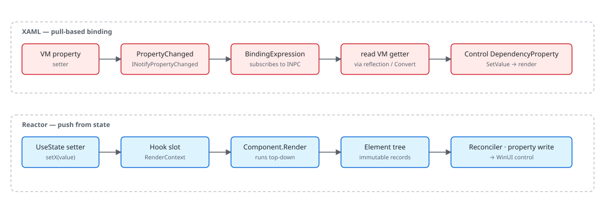

WinUI reference: For the full property surface and design guidance, see Winui3.
If you've spent years inside XAML, the question that keeps coming back
is "where did my bindings go?" Microsoft.UI.Reactor (Reactor) renders the same WinUI controls
your XAML pages renders — Button, TextBox, TabView,
ItemsRepeater — and lays them out through the same panels.
What changes is the source of truth for property values. In XAML, a
control owns its dependency properties, and a binding expression
listens to a view-model property and pulls the new value when
PropertyChanged raises. In Reactor, a hook owns the state, the
component re-renders to produce a new element tree, and the reconciler
writes the property values onto the existing control. The two models
solve the same problem (keep UI in sync with state) but locate the
work in opposite places. Read this page once and the rest of the
codebase falls into place: nothing in Architecture
Overview, Hooks Internals,
or Reconciliation hides a binding system.
Reactor vs XAML¶
This page is for the XAML developer who wants the why. The
Reactor for XAML Developers cookbook covers the
how for common rewrite tasks ("I have a Page with bindings; what
does that become?"). Indexed in two places: section 1 (Get Started)
so a XAML developer hitting the docs cold finds it early, and section
9 (Under the hood) so it sits next to the architecture pages it
complements.
Pull vs push, one diagram¶

| Concern | XAML | Reactor |
|---|---|---|
| State location | View-model property / dependency property | Hook slot inside RenderContext |
| State signal | INotifyPropertyChanged.PropertyChanged |
Setter closure from UseState |
| Property write | BindingExpression.UpdateTarget pulls VM getter |
Reconciler writes after render |
| Style application | Style + Setter + triggers |
Element/modifier composition or Use* named-style hook |
| Animation | Storyboard defined in XAML, started imperatively |
.Animate(...) / .Transition(...) modifier resolved by reconciler |
| Layout state | VisualStateManager + VisualState/Group XAML |
.InteractionStates(...) modifier on element |
| Resources | ResourceDictionary / ThemeDictionary |
ThemeRef record struct |
| Lists | ItemsControl + DataTemplate |
ForEach(items, item => …) builds element per item |
| MVVM | View-model class with INPC properties | Function or class component with hooks |
Every row below explains the mapping in enough depth that the mechanical translation isn't a guess.
Caveat: The pull/push contrast is a runtime distinction, not a feature checklist. Reactor still uses dependency properties — every WinUI control it materializes has its DPs set by the reconciler. What's gone is the binding expression that listens to a VM and pulls. If you attach a
{Binding}to a control Reactor materialized (via an ElementRef cast or by setting it imperatively in an effect), you'll create a parallel reactive edge the reconciler doesn't know about, and the next reconcile pass will overwrite your property write. Drive properties through hook state and let the reconciler write them; do not bind onto controls Reactor owns.
DependencyProperty → element record + modifier¶
XAML's dependency property system is the substrate for everything
reactive in WinUI: bindings hang off DPs, styles set DPs, animations
animate DPs, the VisualStateManager flips DPs. The DP itself is a
slot on a control, with a metadata-driven default value, type
coercion, change notifications, and inheritance through the visual
tree. A Button.Content value is a DP; a Grid.Row attached
property is a DP; theme colors come out of a DP-flavored resource
system.
public abstract record Element
{
/// <summary>
/// Optional key for stable identity across re-renders (like React's key prop).
/// When set, the reconciler uses it to match elements across list reorderings.
/// </summary>
public string? Key { get; init; }
/// <summary>
/// Layout modifiers (margin, padding, size, alignment, etc.) applied to this element.
/// Set via fluent extension methods: TextBlock("hi").Margin(10).Width(200)
/// Modifiers are stored inline so the concrete element type is preserved through chaining.
/// </summary>
public ElementModifiers? Modifiers { get; init; }
Reactor replaces the DP-slot-on-the-control with the
Element record. ButtonElement (a record deriving from
Element) carries Content, OnClick, etc. as record fields. The
modifier system folds layout and styling concerns into a separate
ElementModifiers record threaded through
record with updates. Attached properties (Grid.Row, Canvas.Left)
live in a type-keyed Attached dictionary on the same record.
private static T Modify<T>(T el, ElementModifiers mods) where T : Element =>
el with { Modifiers = el.Modifiers is not null ? el.Modifiers.Merge(mods) : mods };
// #165/#157 — bucket-level merge entry points for pure-layout / pure-visual
// fluent modifiers. Routing through these avoids allocating a throwaway parent
// ElementModifiers (and the bucket sub-record its init shim builds) on every
// chained call: `.Margin().Width().Foreground()` merges the delta straight into
// the Layout / Visual slot instead of constructing a temporary ElementModifiers
// per step. Semantics are identical to Modify(el, new ElementModifiers { <field> }):
// ElementModifiers.Merge copies every non-bucket field as `other.X ?? X` (i.e.
// unchanged) when only a bucket is supplied, and merges the bucket with the same
// `other ?? this` precedence used here.
private static T ModifyLayout<T>(T el, LayoutModifiers delta) where T : Element
{
var mods = el.Modifiers;
if (mods is null)
return el with { Modifiers = new ElementModifiers { Layout = delta } };
var merged = mods.Layout is not null ? mods.Layout.Merge(delta) : delta;
return el with { Modifiers = mods with { Layout = merged } };
}
private static T ModifyVisual<T>(T el, VisualModifiers delta) where T : Element
{
var mods = el.Modifiers;
if (mods is null)
return el with { Modifiers = new ElementModifiers { Visual = delta } };
var merged = mods.Visual is not null ? mods.Visual.Merge(delta) : delta;
return el with { Modifiers = mods with { Visual = merged } };
}
private static T ModifyA11y<T>(T el, AccessibilityModifiers a11y) where T : Element
{
var existing = el.Modifiers?.Accessibility;
var merged = existing is not null ? existing.Merge(a11y) : a11y;
return Modify(el, new ElementModifiers { Accessibility = merged });
}
private static T ModifyTheme<T>(T el, string property, ThemeRef theme) where T : Element
{
var bindings = el.ThemeBindings is not null
? new Dictionary<string, ThemeRef>(el.ThemeBindings) { [property] = theme }
: new Dictionary<string, ThemeRef> { [property] = theme };
return el with { ThemeBindings = bindings };
}
The chain TextBlock("hi").FontSize(24).Margin(8) produces one
TextBlockElement record with merged Modifiers. The reconciler reads
both the typed fields and the modifiers when it patches the control.
There is no per-property change notification: the comparison is
record-level on the next render, and only differences become property
writes.
Binding → closure over state¶
A {Binding Name} in XAML installs a BindingExpression that holds
a reference to the view model and the property path, subscribes to
INotifyPropertyChanged, and on each PropertyChanged raise reads
the source and writes the target DP. The binding is a long-lived
object; mode (OneWay, TwoWay, OneTime), update trigger, converter,
and fallback all live on it.
public (T Value, Action<T> Set) UseState<T>(T initialValue, bool threadSafe = false)
{
if (_hookIndex >= _hooks.Count)
{
_hooks.Add(new ValueHookState<T>(initialValue, threadSafe));
}
var currentIndex = _hookIndex;
_hookIndex++;
if (_hooks[currentIndex] is not ValueHookState<T> hook)
throw new HookOrderException(
$"Hook at index {currentIndex} is {_hooks[currentIndex].GetType().Name}, expected ValueHookState<{typeof(T).Name}> (UseState). " +
"Hooks must be called in the same order every render.");
Reactor doesn't install anything. TextBlock(name) reads the current
value of name (a plain C# variable that happens to come out of
UseState) and produces a TextBlockElement with Content = name as a
record field. When name changes, the setter writes the slot, the
component re-renders, the new TextBlockElement differs from the old, and
the reconciler writes the new Text value onto the existing
TextBlock. There is no binding object — the closure that produces
the element is the binding.
TwoWay shows up as the controlled-input pattern. A TextBox takes
the current value and a setter callback; the user's input fires the
callback, which writes the slot, which re-renders, which writes the
new value back into the TextBox. Mode is implicit in whether you
pass a setter.
DataTemplate → function component¶
A DataTemplate is a recipe: given a data item, produce a control
tree. It's authored in XAML and instantiated by the framework when
items appear in an ItemsControl. The template can name elements
and bind to properties on the item; the runtime keeps a pool and
recycles.
// A XAML DataTemplate is a recipe the framework instantiates per item.
// In Reactor the recipe is just a closure — `Card` is an ordinary method
// returning an Element, and `ForEach` runs it once per item per render.
static Element ProductList(IReadOnlyList<Product> items) =>
VStack(8, ForEach(items, item => Card(item).WithKey(item.Id.ToString())));
static Element Card(Product item) =>
CardSurface(VStack(4,
TextBlock(item.Name).FontSize(16).SemiBold(),
TextBlock(item.Category).Foreground(Theme.SecondaryText)));
The closure item => Card(item) is the template. It runs once per
item per render, produces an element tree, and the child
reconciler matches the elements against the
previous render. Identity comes from position by default; .WithKey(id)
on the item element preserves identity across reorders.
ItemsRepeater is still under the hood — the
ForEach materializes through an ElementFactory that recycles the
real WinUI controls.
Style → modifier composition / named style¶
Style in XAML applies a bag of property setters to every control
that matches a TargetType (or carries the style key). The bag is
keyed by DP, and BasedOn chains styles through inheritance.
Reactor has two analogues. The most common is a plain method that composes elements and modifiers:
// A XAML `Style` is a keyed bag of setters matched by TargetType. The
// Reactor analogue is a plain method that composes a wrapper element — no
// static registration, no runtime TargetType check, just composition.
static Element CardSurface(Element child) =>
Border(child)
.Background(Theme.CardBackground)
.CornerRadius(8)
.Padding(16);
Calling CardSurface(TextBlock("hi")) returns a Border around the child
with the card modifiers applied. This is just composition — no framework involvement, no static
registration, no Style.TargetType check at runtime.
For the handful of canonical WinUI named styles, the styling
page documents named-style fluents — .AccentButton(),
.SubtleButton(), and .TextLink() on buttons, .Informational() /
.Success() / .Warning() / .Error() on InfoBar — which bake a
StaticResource style key into a single call. Anything broader than that
is a helper method like CardSurface above: Reactor has no style
registry and no BasedOn chain. Theme-aware brush properties resolve
through ThemeRef at reconcile time.
ResourceDictionary → ThemeRef + Theme tokens¶
public readonly record struct ThemeRef(string ResourceKey)
{
public override string ToString() => $"ThemeRef({ResourceKey})";
/// <summary>
/// Resolves this theme reference using the element's actual theme.
/// Walks the ThemeDictionaries in Application.Resources and MergedDictionaries
/// to find the brush matching the element's effective theme (which respects
/// per-element RequestedTheme overrides, not just the app-level theme).
/// </summary>
internal static Brush? Resolve(string resourceKey, FrameworkElement fe)
{
var themeName = GetEffectiveThemeName(fe);
return ResolveForTheme(resourceKey, themeName);
}
A ResourceDictionary (especially merged into Application.Resources)
is the XAML way to declare named resources — brushes, doubles, styles
— and reference them via {StaticResource Key} or {ThemeResource Key}.
The latter resolves through the active ThemeDictionaries[name].
Reactor exposes the same WinUI theme dictionaries through
ThemeRef, a readonly record struct holding a resource key. The
static Theme class names the most-used
tokens (Theme.Accent, Theme.CardBackground, etc.); Theme.Ref(key)
is the escape hatch for any other key. The reconciler walks
Application.Resources.ThemeDictionaries exactly the way {ThemeResource}
does, and re-resolves on ActualThemeChanged — so flipping the system
theme updates every Theme.Accent brush without a re-render.
VisualStateManager → InteractionStates modifier¶
VisualStateManager in XAML drives state-machine animations: a control
declares groups of named VisualStates (Normal / PointerOver /
Pressed / Disabled), and a state transition triggers the storyboard
attached to the VisualState. Authors pick states by calling
VisualStateManager.GoToState.
Reactor's .InteractionStates(...) modifier on an element declares
per-state property overrides directly. The reconciler installs WinUI
visual-state group plumbing on the materialized control and flips
properties when the visual state changes. There is no separate
storyboard authoring; transitions are described in C# alongside the
element. See the animation page for the full surface
and the animation-pipeline page for the
reconciler-side detail.
Storyboard → Animate / Transition modifiers¶
Storyboard is the WinUI animation primitive: a tree of timelines
animating dependency properties over time, started imperatively or
declaratively via VisualState. The result is a long-lived
AnimationCollection attached to the control.
Reactor's .Animate(...) and .Transition(...) modifiers on an
element describe the same animation as a record on the element. The
reconciler unpacks the record into either an
ImplicitAnimationCollection (composition-level transitions) or a
keyframe-driven property animation, depending on the mode. Stop the
animation by removing the modifier on the next render; the reconciler
detaches the collection. For a one-off batch driven by an event rather
than a persistent modifier, wrap the state change in the ambient
AnimationScope.WithAnimation(curve, action) scope instead — see the
animation page for the full decision table.
INotifyPropertyChanged → hook re-render¶
public sealed class Observable<T> : INotifyPropertyChanged
{
private T _value;
public Observable() : this(default!) { }
public Observable(T initial) => _value = initial;
public T Value
{
get => _value;
set
{
if (EqualityComparer<T>.Default.Equals(_value, value)) return;
_value = value;
PropertyChanged?.Invoke(this, _valueChangedArgs);
}
}
public event PropertyChangedEventHandler? PropertyChanged;
INotifyPropertyChanged is XAML's contract for "this property is
observable". A binding subscribes to PropertyChanged; raising it
re-pulls. Reactor's UseObservable hook is the migration bridge:
hand it an existing INotifyPropertyChanged object, and the component
subscribes for the lifetime of the hook and re-renders on
PropertyChanged. For pure Reactor state you never declare
INotifyPropertyChanged — the hook setter is the signal.
MVVM ViewModel → component state + UseObservable bridge¶
The MVVM ViewModel is the place XAML developers put "things the page
needs to display and the commands the page can issue". It implements
INotifyPropertyChanged, holds ICommand instances, and stays alive
across navigations.
Reactor doesn't separate VM from View. State lives in the component,
in hooks. Commands are functions you close over. Pages persist via
UsePersisted, not via a long-lived VM. When
you need a VM-shaped object — for shared logic across components,
for an existing service-layer model — author a plain class, raise
PropertyChanged (or wrap a value in
Observable<T>), and let
each consuming component subscribe via UseObservable. The component
still owns its rendered slice of state; the VM is the source.
Patterns¶
Porting a XAML page¶
The mechanical translation has four steps:
- Identify VM properties used in the page. Each becomes a
UseState(component-local) or aUseObservableover an existing INPC source. - Translate the XAML markup tree. Outer panel →
VStack/HStack/Grid; named elements stay positional inside the render; styles become modifier chains. - Translate bindings into closures.
{Binding Name}→ just read the variable.Mode=TwoWay→ controlled-input pair(value, setter). - Translate commands. An
ICommandbecomes a regular function, typically captured by the click handler closure. The commanding page documents the explicit shape if the command must be sharable.
public (T Value, Action<T> Set) UseState<T>(T initialValue, bool threadSafe = false)
{
if (_hookIndex >= _hooks.Count)
{
_hooks.Add(new ValueHookState<T>(initialValue, threadSafe));
}
var currentIndex = _hookIndex;
_hookIndex++;
if (_hooks[currentIndex] is not ValueHookState<T> hook)
throw new HookOrderException(
$"Hook at index {currentIndex} is {_hooks[currentIndex].GetType().Name}, expected ValueHookState<{typeof(T).Name}> (UseState). " +
"Hooks must be called in the same order every render.");
The Reactor for XAML Developers cookbook has worked examples for the most common page shapes: settings, list-detail, modal dialog. Use that as the recipe surface; this page is for when you want to understand what's happening underneath.
Common Mistakes¶
Implementing INPC on local state out of habit¶
// Don't:
public class ProfilePage : Component, INotifyPropertyChanged
{
private string _name = "";
public string Name
{
get => _name;
set { _name = value; PropertyChanged?.Invoke(this, new(nameof(Name))); }
}
public event PropertyChangedEventHandler? PropertyChanged;
}
public (T Value, Action<T> Set) UseState<T>(T initialValue, bool threadSafe = false)
{
if (_hookIndex >= _hooks.Count)
{
_hooks.Add(new ValueHookState<T>(initialValue, threadSafe));
}
var currentIndex = _hookIndex;
_hookIndex++;
if (_hooks[currentIndex] is not ValueHookState<T> hook)
throw new HookOrderException(
$"Hook at index {currentIndex} is {_hooks[currentIndex].GetType().Name}, expected ValueHookState<{typeof(T).Name}> (UseState). " +
"Hooks must be called in the same order every render.");
The framework doesn't subscribe to PropertyChanged on a component —
re-renders come from UseState setters or parent re-renders. The
field is invisible to the render loop, so updating Name does
nothing. Move the value into UseState and the setter is the signal;
the INPC ceremony goes away.
Tips¶
Bindings don't exist. When you find yourself wondering "how do I
bind this", stop and ask "what state does this property read from?"
The answer is a UseState, a UseObservable, or a prop — and the
control just reads the variable.
ThemeRef is your {ThemeResource}. Anywhere you'd reach for a
themed brush from Application.Resources, use Theme.Accent or
Theme.Ref(key). The reconciler resolves the brush per element and
re-resolves on theme change.
Don't translate XAML 1:1. A page with seven UserControls and
twelve bindings often becomes a single component with four hooks. The
markup-to-code translation collapses a lot of XAML's structure
because the C# function body holds it all in one place.
Next Steps¶
- Reactor for XAML Developers — Cookbook with worked page rewrites.
- Architecture Overview — The runtime diagram that places everything here.
- Theming Tokens — Full
ThemeRefsurface. - Hooks — The state-handling API surface.
- Reactivity Model — Why the push direction is the way it is.